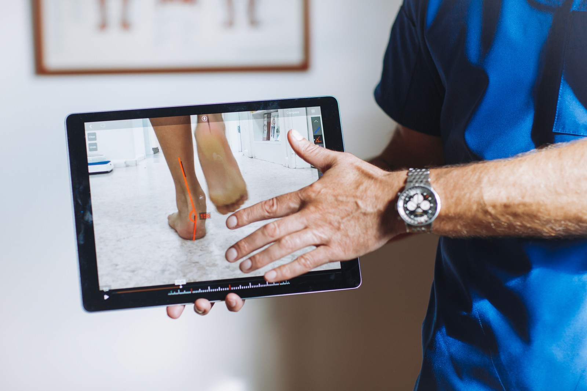
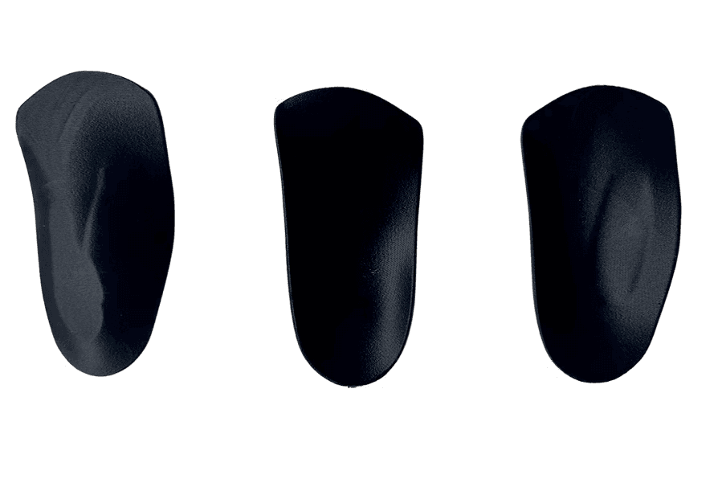
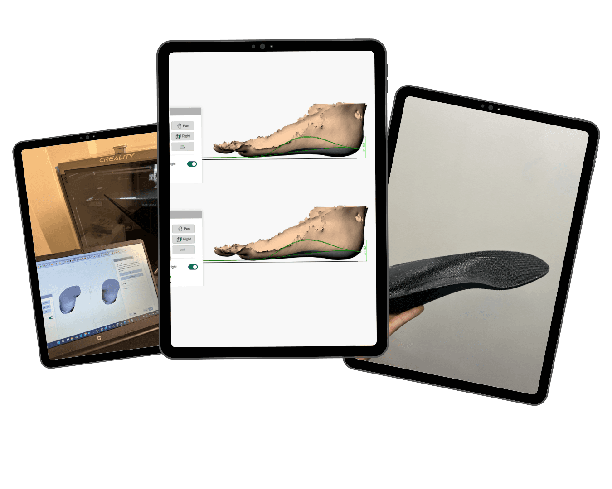
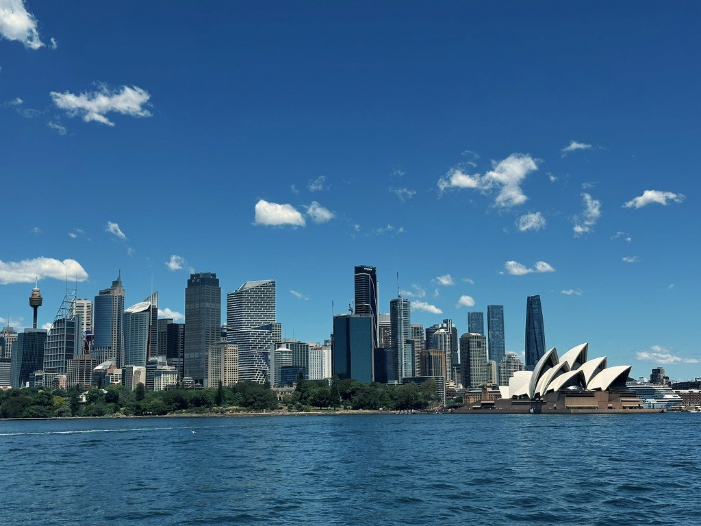

Marketing, patient communication, practice management, and in-house 3D-printed orthotics for a multi-location specialist podiatry clinic.
Working for a multi-location clinic meant wearing many hats. One day I'd be planning marketing campaigns and creating content, the next I'd be designing custom orthotics and managing patient communication.

One of the most innovative aspects of my work was designing and 3D printing custom orthotics in-house. Patients no longer face the traditional two-to-three-week wait for their orthotics.
We've revolutionised this process by bringing orthotic production entirely in-house. Working closely with our podiatrist and massage therapist, I handled the 3D design, modelling, and printing of orthotics using advanced Computer-Aided Design (CAD) software.
This system allows us to reduce turnaround time from weeks to just days, achieve higher accuracy, and allow for adjustments, modifications, or remakes to be done on the spot.
The approach not only improves efficiency but also enables a more personalized, responsive, and high-quality experience. It's a direct intersection of creative and clinical work.
Alongside the clinical production work, I owned the clinic's day-to-day marketing presence: creating content that felt clear, helpful, and consistent for patients.

Between the ocean dip, the morning coffee, and a clinic day where no two problems look the same, Sydney gives this work its pace: practical, sunny, collaborative.
